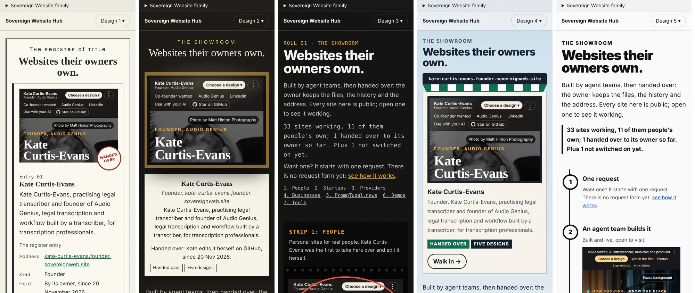
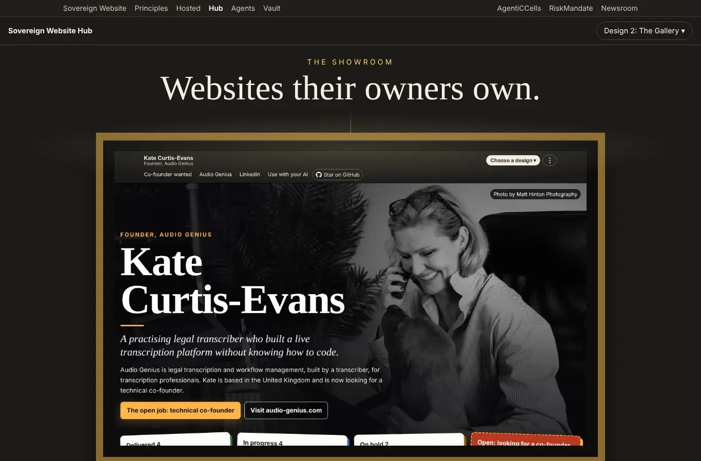

Synthetic users: the hub's five designs, round 7
Site: https://hub.sovereignweb.site/ at 3e50d13 (v0.1.24). Run: 23 November 2026, about 13:10 UTC, by design.b.rounds. Look score for the home page: 3.2 (3, 3, 4, 3, 3), as in round 6. Best design votes: The Line twice, The Register twice, The Gallery once. Nobody said "wow"; the critic called The Gallery on desktop "near wow". The review.
Method: Synthetic users, as in round 6: one agent, five personas, its own crop folder. These are simulations, and never replace the measured checks or a real person.
| Persona | Home | Best design (score) | Weakest | The one change |
|---|---|---|---|---|
| Phone visitor | 3 | The Line (3) | The Gallery | "put 'Built by agent teams, then handed over...' directly under the headline on every design" |
| Business owner | 3 | The Line (4, desktop) | Contact Sheet | "a working request route, even a mailto link" |
| Low-vision reader | 4 | The Register (4) | Contact Sheet | "darken the secondary grey text and enlarge the small-caps labels" |
| Design critic | 3 | The Gallery (4 desktop, 3 phone) | The Street (desktop) | "crop phone screenshots to the hero image and name, not the site header" |
| Journalist | 3 | The Register (3) | Contact Sheet | "make the headline match the facts" |
Agreed by three or more
- The sentence that says what the hub is is below the first phone screen on The Register, The Gallery and The Street.
- On phones, Kate's screenshot shows her site's navigation bar, not her face. Four of the five first screens open on the same dark strip.
- "There is no request form yet" undercuts "Want one?"
- The Register is the most trustworthy and readable page.
- The addresses wrap well now, only at dots.
The changes since round 6
- Helped:
- each idea is now on the first screen (Contact Sheet only just);
- the dot-only wrapping;
- the shorter Register;
- the lead design is now Design 1.
- Partly done: Contact Sheet's red circle still crosses the screenshot.

